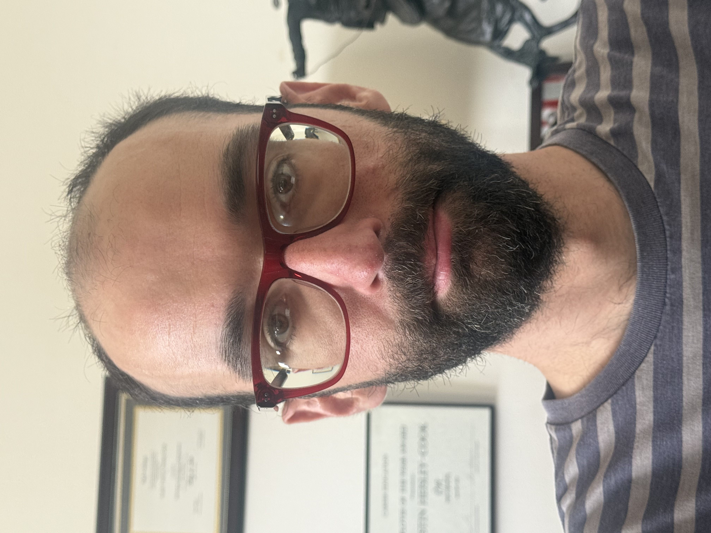

Field Operations Intern | EVgo
Contributed Python programming for AMS and collaborated in team meetings.

.NET Developer | Microsoft Technology Enthusiast
I'm a .NET developer with a strong interest in Microsoft technologies, including C# and Azure. My background also includes Python and web development, campus IT support, accessibility work, and leading software communities.
Contributed Python programming for AMS and collaborated in team meetings.
Managed an international team, moved project workflows to GitHub, improved documentation, coordinated a website and logo redesign, and contributed a text-to-speech library.
Supported campus technology for a college community of 5,200 students, maintained classroom and lab computers, and converted more than 1,000 textbooks to accessible formats using OCR. Named Best Worker of the Year.
Also experienced in office support, retail operations, and moderating large online communities focused on computers, programming, and autism support.
Technologies: C#, .NET, Azure, Python, PHP, Laravel, HTML, CSS, JavaScript, Visual Basic, and C++.
Certifications listed on my resume: .NET, PHP, Laravel, and Azure.